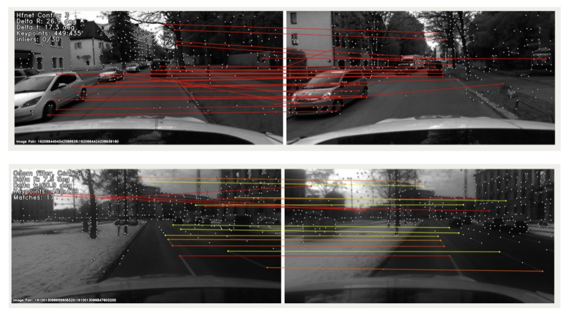

Top: Dynamic Objects
Bottom: Specular, Repetitive Textures

Despite the impressive results achieved by many existing Structure from Motion (SfM) approaches, there is still a need to improve the robustness, accuracy, and efficiency for large-scale scenes with many outlier matches and sparse view graphs. In this paper, we propose AdaSfM: a coarse-to-fine adaptive SfM approach that is scalable to large-scale and challenging datasets. Our approach first does a coarse global SfM which improves the reliability of the view graph by leveraging measurements from low-cost sensors such as Inertial Measurement Units (IMUs) and wheel encoders. Subsequently, the view graph is divided into sub-scenes that are refined in parallel by a fine local incremental SfM regularized by the result from the coarse global SfM to improve the camera registration accuracy and alleviate scene drifts. Finally, our approach uses a threshold-adaptive strategy to align all local reconstructions to the coordinate frame of global SfM. Extensive experiments on large-scale benchmark datasets show that our approach achieves state-of-the-art accuracy and efficiency.
@article{yuchen_AdaSfM,
author = {Yu Chen, Zihao Yu, Shu Song, Tianning Yu, Jianming Li, Gim Hee Lee},
title = {AdaSfM: From Coarse Global to Fine Incremental Adaptive Structure from Motion},
year = {2022},
}